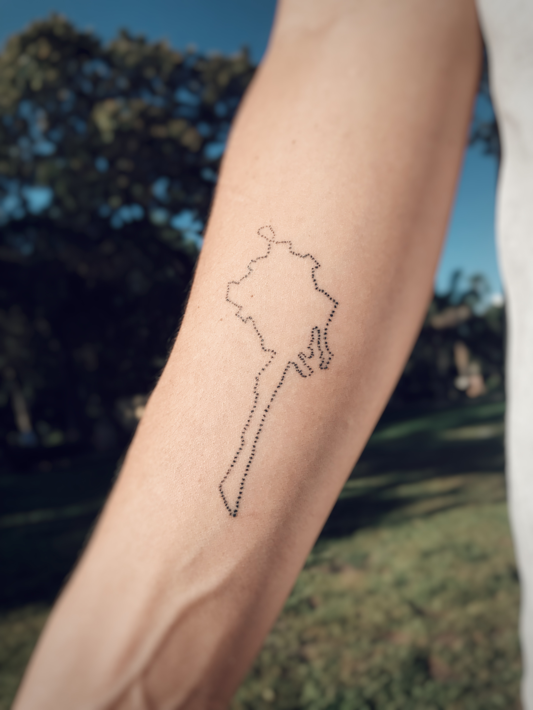
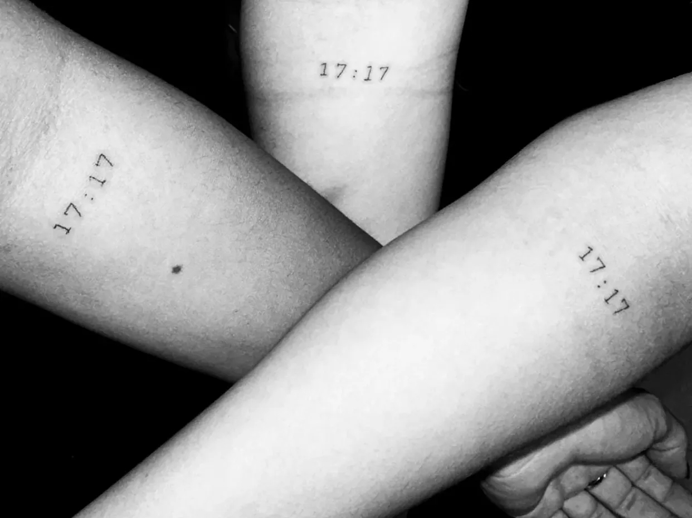
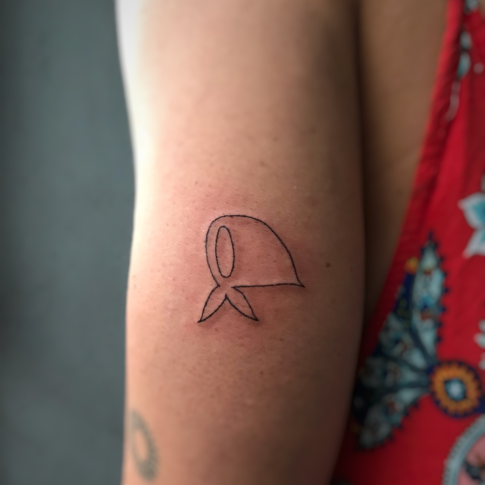
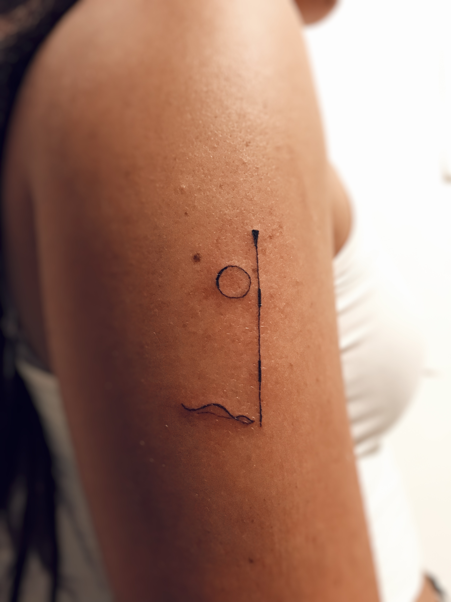

Tatuador de fine line enfocado en la precisión, el equilibrio y la composición atemporal.
Cada pieza es diseñada para coexistir naturalmente con el cuerpo, no como algo ajeno, sino como parte de un todo.
Mi aproximación al tatuaje parte de pensarlo como algo eterno y atemporal. Busco que cada diseño acompañe a la persona en todos los contextos de su vida.
Un tatuaje que funcione en lo cotidiano, en lo formal, en lo íntimo. Algo que permanezca y evolucione con quien lo lleva.